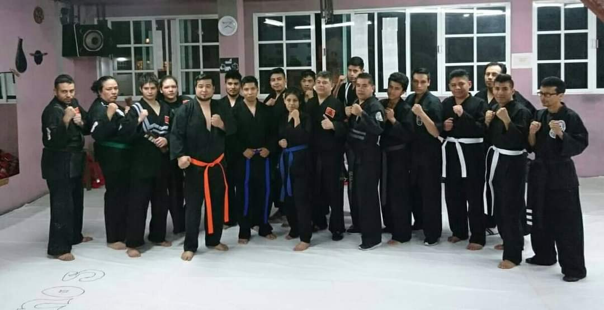
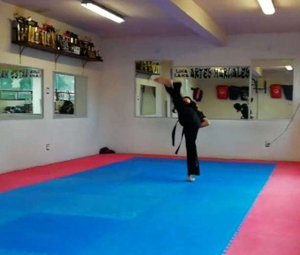

Sobre nosotros

Somos una Organización regristrada ante la FEMEDELL, la cuál lleva más de 10 años impartiendo clases de manera profesional.
Como organización nos interesa el desarrollo de las habilidades y destrezas de nuestros alumnos, además de promover los valores de cado uno de ellos para generar personas de bien y funcionales ante la sociedad.
¿Qué es el Lima-Lama?

Lima Lama es un dinámico y explosivo sistema de pelea creado por el Gran Maestro Tu’Umamao "Tino" Tuiolosega Pomele, nacido en Utelei Tutuila, hoy Samoa Americana, el 2 de Julio de 1931. El Maestro Tuiolosega combinó los conocimientos de las artes polinesias de combate que heredó de sus ancestros con sus habilidades en boxeo y pelea callejeraNumerosas modificaciones fueron establecidas y ciertas técnicas y métodos de enseñanza fueron probados para examinar su efectividad y su aproximación a la realidad. Hecho lo cual, formalizó los movimientos y les dio una secuencia y un orden lógico dentro de un complejo sistema al que bautizó como Lima Lama (Sabiduría de la Mano).
Al Gran Maestro le tomó exactamente once años adaptar el sistema, con todo lo que conocemos de las artes polinesias, el boxeo y la pelea real callejera. Lima Lama ya estaba formado y ordenado con todas las características que lo hicieran popular a mediados de los 50’s, pero fue públicamente introducido hasta enero de 1965. La única ocasión en que Lima Lama fue enseñado antes de su introducción en Utelei Tutuila, Samoa Americana, durante el verano de 1958 y hasta septiembre de 1959.
El peleador de Lima Lama adopta guardias naturales, no estudiadas ni complicadas; más bien enfocadas a lo práctico. Requiere de flexibilidad y sus movimientos son rápidos y ágiles (inspirados en el tigre y el leopardo). Su pateo es dirigido a zonas articulares de la parte inferior del tronco y sus golpes son similares a los del boxeo, obteniendo con esto menor tiempo desperdiciado en cada golpe. La defensa personal y sus técnicas afines están enfocadas a la realidad de una pelea sin reglas. Dentro del sistema no se recomienda el bloqueo directo contra golpes y patadas, más bien se recomienda la desviación de dichos ataques agarrando, jalando, barriendo o inmovilizando con presión a centros nerviosos, fracturas de huesos y ligamentos, dislocaciones, luxaciones, etc... Estos conceptos, convertidos en técnicas, dan origen a movimientos y formas que definen la excelencia de un practicante y paleador de Lima Lama.
Credo de Lima-Lama
.png)
PROMESA
Prometo guardar los principios de Limalama, con honor y dignidad hacia mi patria, con fe y respeto hacia mis semejantes.
VISIÓN
Limalama, es la aceptación del progreso con una mente abierta hacia un mejor entendimiento para así poder tener un cuerpo sano, sabiduría y perfección.
FILOSOFÍA
Limalama, es la dedicación de uno mismo, a la preservación de los derechos humanos, la dignidad, la búsqueda de la felicidad, de la libertad y de la justicia a la que tienen derecho todos los seres humanos sin tomar en cuenta raza o credo.
Donde nos ubicamos
Calle Zacatenco MZ 2, Zacatenco, Tláhuac, 13440 Ciudad de México, CDMX
Número telefonico: 5576304233